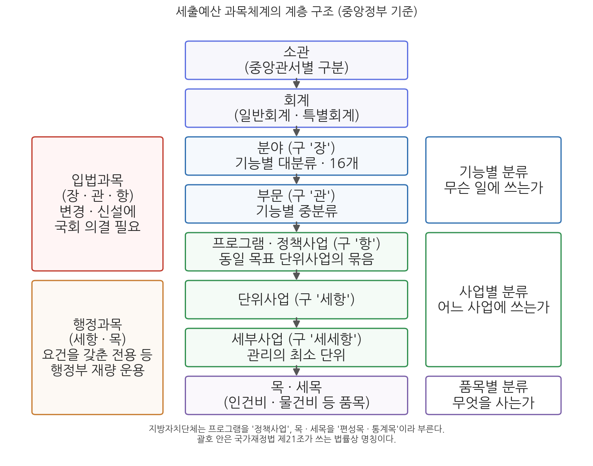

5주차 1차시. 미시적 재정구조: 예산의 분류와 과목체계
최종 수정: 2026-08-13 · 이 교재는 학기 중에도 계속 업데이트됩니다
예산이란 가격표가 붙은 일련의 목표들이라고 볼 수 있다. (아론 윌다브스키, 『예산과정의 정치』, 1964)
이 장에서 배우는 것
2025년 12월 2일, 국회는 2026년도 예산을 총지출 727.9조 원으로 확정했다. 언론의 헤드라인은 이 한 줄의 숫자였지만, 국회 심의장에서 실제로 벌어진 일은 총액의 조정이 아니었다. 국회는 정부안에서 정책펀드와 인공지능(AI) 지원 등 4.3조 원을 깎고, 미래 성장동력과 민생, 재해예방, 지역경제에 4.2조 원을 새로 얹었다. 깎고 얹는 작업은 "총지출 728조 원"이라는 덩어리 위에서가 아니라, 수천 개의 사업과 항목, 곧 예산 과목 위에서 이루어졌다. 어느 부처의 어느 사업, 그 사업의 어느 경비를 줄일 것인가. 예산을 둘러싼 모든 실질적 다툼은 과목의 세계에서 벌어진다.
4주차에서 우리는 예산총계와 순계, 통합재정수지, 총지출, 국가채무처럼 나라 살림을 하나의 숫자로 요약하는 거시적 재정구조를 보았다. 이번 주는 렌즈를 반대로 돌린다. 하나의 숫자를 수천 개의 조각으로 쪼개어 기록하는 미시적 재정구조, 곧 예산서의 내부 구조가 이번 주의 주제다. 올해 사회복지에 얼마가 배정되었는지, 그중 노인복지 예산이 얼마인지는 모두 이 구조 안에 적혀 있다. 윌다브스키의 표현을 빌리면 예산은 가격표가 붙은 목표들의 목록인데, 이번 차시는 그 목록이 어떤 규칙으로 작성되는지를 배우는 시간이다. 구체적으로 다음을 배운다.
- 예산 분류의 의의: 분류는 예산 정보를 창출하며, 분류 방식이 예산 운영의 초점을 정한다는 것
- 조직별·기능별·사업별·품목별·경제성질별 분류의 논리와 용도
- 세입예산과목(관·항·목)과 세출예산과목(분야-부문-프로그램-단위사업-목)의 구조
- 입법과목과 행정과목의 구분, 그리고 그 구분이 국회 통제와 행정부 재량을 가르는 방식
- 과목체계가 재정 투명성의 그릇이 되는 이유와 한국의 재정정보 공개 제도
이 장은 하나의 질문을 따라 전개된다. "정부는 하나의 금액 덩어리인 예산을 어떤 기준으로 쪼개어 기록하고, 그 기록은 누구에게 어떤 정보를 주는가?"
1.1 예산 분류의 의의와 다섯 가지 분류 방식을 정리한다 → 1.2 세입예산과목의 분류체계를 본다 → 1.3 세출예산과목의 계층 구조(분야-부문-프로그램-단위사업-목)와 입법과목·행정과목의 구분을 뜯어본다 → 1.4 과목체계가 재정 투명성과 만나는 지점, 곧 열린재정 등 재정정보 공개 제도를 확인한다.
1.1 예산 분류의 의의와 방식
총액은 하나, 내용은 여럿: 분류는 정보를 창출한다
예산의 총액은 세입이든 세출이든 단일한 금액으로 표시된다. 2026년 본예산의 총지출 727.9조 원, 총수입 675.2조 원이 그것이다. 그러나 예산의 내용은 용도에 따라 다양하게 표현되어야 한다. 국방에 얼마, 교육에 얼마, 교육 중에서도 어느 부처의 어느 사업에 얼마가 가는지를 보여 주지 못하는 예산서는 심의할 수도, 집행할 수도, 이해할 수도 없는 문서다. 그래서 예산의 분류는 단순한 정리 작업이 아니라 필요한 예산 정보를 창출하는 작업이다. 같은 727.9조 원이라도 부처별로 자르면 "누가 쓰는가"가 보이고, 기능별로 자르면 "무슨 일에 쓰는가"가 보이며, 품목별로 자르면 "무엇을 사는 데 쓰는가"가 보인다. 어떻게 자르느냐가 곧 무엇이 보이느냐를 결정한다.
예산의 분류(budget classification)는 예산의 내용을 일정한 기준에 따라 체계적으로 구분하는 것을 말한다. 분류의 기준으로는 조직별, 기능별, 사업별, 품목별, 경제성질별 분류가 대표적이다. 예산과목은 예산의 내용을 명백히 하기 위해 이러한 분류 기준에 따라 예산서에 설정해 놓은 구분 단위로, 세입예산과목과 세출예산과목으로 나뉜다. 한국의 예산과목은 소관별, 기능별, 사업별, 품목별(성질별) 분류가 결합된 부호체계를 갖추고 있다.
예산을 분류하는 목적은 크게 네 가지로 정리된다. 첫째, 재정정책과 사업계획의 수립이다. 어느 기능과 사업에 자원이 얼마나 가고 있는지를 알아야 다음 해의 배분을 설계할 수 있다. 둘째, 예산 심의다. 국회가 정부안을 심사하려면 총액이 아니라 사업과 비목 단위의 정보가 필요하다. 셋째, 예산 집행이다. 배정된 돈이 정해진 용도로 쓰이는지 확인하는 회계책임(accountability)은 과목 단위의 기록 위에서만 성립한다. 넷째, 국민이 정부의 활동을 이해하기 위해서다. 예산서는 정부가 국민에게 자신의 활동을 설명하는 가장 기본적인 문서이고, 분류는 그 설명의 문법이다.
좋은 분류체계가 갖춰야 할 원칙으로는 세 가지가 제시된다(Jacobs, Hélis & Bouley, 2009). 포괄성의 원칙은 모든 정부기관의 수입과 지출이 빠짐없이 분류체계에 담겨야 한다는 것이고, 단일성의 원칙은 수입과 지출이 하나의 통합된 체계 안에서 분류되어야 한다는 것이며, 내적 일관성의 원칙은 동일한 기준이 체계 전체에 일관되게 적용되어야 한다는 것이다. 2주차에서 본 전통적 예산원칙 가운데 완전성(모든 수입과 지출의 계상)과 통일성의 요구가 분류체계의 설계 원칙으로 이어진 셈이다.
분류는 중립적이지 않다: 분류가 예산 운영의 초점을 정한다
예산 분류가 중요한 더 깊은 이유는, 분류 방식이 예산 운영의 목표에 영향을 미치기 때문이다. 예산서가 어떤 정보를 앞세우느냐에 따라 편성자, 심의자, 집행자의 주의가 쏠리는 곳이 달라진다. 예를 들어 품목별 분류는 정부가 구입하는 물품과 지불하는 급여에 초점을 맞추게 하므로, 심의와 통제가 "이 물품 구입이 적정한가"에 집중되고, 정작 "이 지출로 어떤 서비스가 얼마나 제공되는가"라는 정책 이슈는 시야에서 밀려난다. 심지어 서비스 수준과 무관한 방식으로 지출 유형을 바꾸도록 유도하기도 한다. 인건비 항목이 깎일 것 같으면 같은 일을 외주 용역(물건비)으로 돌리는 식의 행태가 그것이다.
쉬크(Schick, 1966)는 모든 예산체계가 통제(control), 관리(management), 계획(planning)의 세 지향을 함께 담고 있으며, 어느 지향을 앞세우느냐가 예산제도의 성격을 가른다고 보았다. 분류는 이 지향을 실어 나르는 그릇이다. 품목별 분류를 앞세운 예산서는 "정해진 품목대로 썼는가"를 묻는 통제 지향의 제도가 되고, 사업별 분류를 앞세운 예산서는 "이 사업으로 무엇을 이루었는가"를 묻는 관리·계획 지향의 제도가 된다. 20세기 예산개혁의 역사(13주차 1차시)는 이 그릇을 바꿔 온 역사이기도 하다. 품목별 예산제도에서 성과주의, 계획예산, 영기준 예산을 거쳐 한국이 2007년 프로그램 예산제도에 도달한 경로는 다음 차시와 13주차에서 이어 본다.
다섯 가지 분류 방식
세출예산의 분류 방식은 각각 서로 다른 질문에 답하도록 설계되어 있다. 표 5-1이 그 요지다.
표 5-1. 세출예산 분류 방식의 비교
| 분류 방식 | 묻는 질문 | 주된 용도 |
|---|---|---|
| 조직별 분류 | 누가 얼마를 쓰는가 | 소관 책임의 확정, 예산 심의의 기본 단위 |
| 기능별 분류 | 정부가 무슨 일을 하는 데 얼마를 쓰는가 | 정책 우선순위 파악, 시계열·국제 비교 |
| 사업별 분류 | 구체적으로 어느 사업(프로그램)에 얼마를 쓰는가 | 사업 단위의 편성·관리·성과 측정 |
| 품목별 분류 | 정부가 무엇을 구입하는 데 얼마를 쓰는가 | 지출 통제, 회계책임 확보 |
| 경제성질별 분류 | 국민경제에 미치는 총체적 효과가 어떠한가 | 재정의 경제적 영향 분석, 통합재정 작성 |
몇 가지를 부연한다. 조직별 분류는 가장 오래되고 기본적인 분류로, 중앙관서의 소관별로 예산을 나눈다. 예산의 편성 요구도, 국회의 상임위원회 예비심사도 부처 단위로 이루어지므로 조직별 분류는 실무의 뼈대가 된다. 기능별 분류는 국방, 교육, 사회복지처럼 정부 활동의 목적을 기준으로 나누는 것으로, 정부가 하는 일의 큰 그림을 보여 주기 때문에 흔히 "시민을 위한 분류"라고 불린다. 품목별 분류는 인건비, 물건비, 이전지출 같은 투입 품목을 기준으로 나누며, 통제 지향이 가장 강하다. 경제성질별 분류는 정부 지출이 국민경제에 미치는 효과를 기준으로 소비지출과 자본지출, 경상이전 등을 구분하는 것으로, 4주차에서 본 통합재정 통계가 바로 이 분류 위에서 작성된다. 통합재정수지가 재정의 경기 영향을 읽는 도구가 될 수 있는 것은, 경제성질별 분류가 지출의 경제적 성격 정보를 만들어 주기 때문이다.
이와 별도로, 예산이 담는 정보의 차원에서 품목별 예산제도, 성과주의 예산제도, 계획예산제도, 영기준 예산제도, 프로그램 예산제도 같은 예산제도의 유형을 나누기도 하고, 특정 목적의 관점에서 예산을 다시 읽는 조세지출예산서, 성인지 예산서, 온실가스감축인지 예산서 같은 제도도 있다. 앞의 계열은 13주차 1차시(재정개혁론)에서, 뒤의 계열은 6주차 2차시에서 각각 자세히 다룬다.
1.2 세입예산과목의 분류체계
세입예산과목이 어떻게 구분되는지는 국가재정법이 직접 정하고 있다. 조문을 먼저 읽자.
"② 세입세출예산은 독립기관 및 중앙관서의 소관별로 구분한 후 소관 내에서 일반회계·특별회계로 구분한다.
③ 세입예산은 제2항의 규정에 따른 구분에 따라 그 내용을 성질별로 관·항으로 구분하고, 세출예산은 제2항의 규정에 따른 구분에 따라 그 내용을 기능별·성질별 또는 기관별로 장·관·항으로 구분한다.
④ 예산의 구체적인 분류기준 및 세항과 목의 구분은 기획예산처장관이 정한다." (제1항 생략. 제4항은 2026년 정부조직 개편에 따른 타법개정으로 소관이 기획예산처장관으로 정비된 현행 조문이다.)
무슨 뜻인가. 예산과목의 큰 뼈대, 곧 소관과 회계의 구분, 세입의 관·항, 세출의 장·관·항까지는 법률이 정하고, 그 아래의 세부 구분(세항과 목)은 중앙예산기관인 기획예산처장관에게 맡긴다는 구조다. 큰 칸은 국회가 법률로 고정하고 작은 칸은 행정부가 채우는 이 역할 분담은, 뒤에서 볼 입법과목과 행정과목의 구분으로 그대로 이어진다.
이 조문에 따라 세입예산과목은 세 단계를 거쳐 구분된다. 먼저 중앙관서의 소관별로 나누고, 소관 안에서 일반회계와 특별회계로 나눈 뒤(3주차에서 본 회계 구분이 여기서 다시 등장한다), 그 내용을 성질별로 관·항으로, 그리고 기획예산처장관이 정하는 기준에 따라 목으로 구분한다. 예컨대 내국세라는 관 아래에 소득세, 법인세, 부가가치세 같은 항이 놓이고, 그 아래에 다시 세부 목이 놓이는 식이다. 2026년 본예산의 총수입 675.2조 원은 이렇게 쌓인 관·항·목 숫자들의 합계다.
세입예산과목을 읽을 때 유의할 점이 있다. 세출예산과 달리 세입예산은 지출 권한을 부여하는 문서가 아니라 수입의 추계라는 점이다. 정부가 세금을 걷는 권한은 예산서가 아니라 조세법률주의에 따라 각 세법에서 나오며(헌법 제59조), 세입예산서의 숫자는 그 법률에 따라 얼마가 걷힐지를 미리 셈해 적은 것이다. 그래서 세입예산과목의 기능은 통제보다 정보에 있다. 나라의 수입이 어떤 원천에서 어떤 구성으로 들어오는지를 보여 주는 것이다. 한편 지방자치단체의 세입예산은 내용의 성질과 기능을 고려하여 장·관·항·목으로 구분하며, 그 세부 기준은 행정안전부장관이 정한다. 중앙의 세입과목 기준은 기획예산처, 지방의 과목 기준은 행정안전부라는 소관의 차이도 함께 기억해 두자.
1.3 세출예산과목의 분류체계
분야-부문-프로그램-단위사업-목: 다섯 층의 구조
세출예산과목이야말로 미시적 재정구조의 본체다. 세출예산과목도 세입과 마찬가지로 중앙관서의 소관별, 회계별 구분에서 출발한다. 그다음이 이 장의 핵심이다. 현재 한국의 중앙정부 세출예산은 기능별 분류인 분야와 부문, 사업별 분류인 프로그램과 단위사업(그 아래 세부사업), 품목별 분류인 목과 세목이 아래로 이어지는 계층 구조로 짜여 있다. 분야는 일반·지방행정, 국방, 교육, 사회복지 등 16개로 나뉘는 기능별 대분류이고, 부문은 그 아래의 중분류다. 부문 아래에 놓이는 프로그램은 동일한 정책목표를 수행하는 단위사업들의 묶음이며, 단위사업 아래의 세부사업이 실제 관리의 최소 단위가 된다. 그리고 각 사업의 지출은 다시 인건비, 물건비, 이전지출 같은 목·세목으로 표시된다. 요컨대 하나의 지출은 "누구의(소관), 어느 회계에서, 무슨 기능의(분야·부문), 어느 사업을 위한(프로그램·단위사업·세부사업), 어떤 성질의(목·세목) 돈"인지가 모두 표시된 좌표를 갖는다.
그림 5-1이 이 구조를 한눈에 보여 준다.

그림 5-1을 읽는 법은 이렇다. 가운데 기둥이 세출예산과목의 계층으로, 위에서 아래로 소관, 회계, 분야, 부문, 프로그램, 단위사업, 세부사업, 목·세목의 순서다. 각 상자의 괄호 안은 국가재정법 제21조가 쓰는 법률상의 명칭(장·관·항·세항 등)이다. 오른쪽 상자들은 각 층이 어떤 분류 방식에 해당하는지를(기능별, 사업별, 품목별), 왼쪽 상자들은 각 층이 입법과목인지 행정과목인지를 보여 준다. 이 그림에서 알 수 있는 것은 두 가지다. 첫째, 한국의 세출과목 체계는 1.1절의 분류 방식들이 배타적으로 경쟁하는 것이 아니라 층을 나누어 결합된 구조다. 기능별 분류가 위층을, 사업별 분류가 허리를, 품목별 분류가 아래층을 맡는다. 둘째, 계층의 중간에 국회 통제와 행정부 재량을 가르는 경계선이 지나간다. 이제 그 경계선을 보자.
입법과목과 행정과목: 통제와 재량의 경계선
세출예산과목 중 법률(국가재정법 제21조)이 직접 구분을 정한 장·관·항, 곧 오늘날의 분야·부문·프로그램을 입법과목이라 하고, 그 아래에서 기획예산처장관이 구분을 정하는 세항(단위사업)과 목을 행정과목이라 한다. 이 구분은 단순한 명칭 문제가 아니라 예산 유용의 통제 수준을 가르는 실질적 경계선이다. 입법과목 사이에서 금액을 옮겨 쓰는 것을 이용(移用)이라 하는데, 이는 국회가 의결한 예산의 큰 틀을 바꾸는 일이므로 미리 예산으로써 국회의 의결을 얻은 때에만 할 수 있다. 입법과목을 새로 만들거나 금액을 늘리는 일은 원칙적으로 추가경정예산(추경) 같은 예산 성립 절차를 다시 밟아야 한다. 반면 행정과목 사이의 이동인 전용(轉用)은 일정한 요건 아래 행정부의 재량으로 할 수 있다. 예비비의 지출 결정이나 예산의 이월처럼 국가재정법이 정한 신축성 확보 수단들도 대체로 행정과목 수준에서 작동한다. 이러한 신축성 수단들의 상세한 요건과 절차는 10주차 2차시(예산집행)에서 다룬다.
이 경계선의 뿌리에는 예산 한정성의 원칙이 있다. 조문을 읽자.
"각 중앙관서의 장은 세출예산이 정한 목적 외에 경비를 사용할 수 없다."
무슨 뜻인가. 한 문장짜리 이 조문은 세출예산의 모든 과목에 법적 구속력을 부여하는 선언이다. 국회가 의결한 예산서의 각 과목은 단순한 계획 수치가 아니라 "이 목적에, 이 금액까지"라는 지출 권한의 한계이며, 그 한계를 벗어나는 지출은 위법이 된다. 2주차에서 본 한정성의 원칙이 실정법으로 구현된 조문이다. 이용과 전용은 이 원칙에 대한 예외이므로 법률이 정한 요건 아래에서만 허용되며, 예외의 문턱이 입법과목(국회 의결)과 행정과목(행정부 재량)에서 다르게 설정되어 있는 것이다. 국회의 예산 통제가 어느 깊이까지 미치는지는 헌법에도 흔적이 있다. 헌법 제57조가 국회의 증액과 새 비목 설치를 "지출예산 각항", 곧 입법과목 단위로 금지하고 있는 것이 그것이다.
국가재정법 제21조는 여전히 장·관·항이라는 명칭을 쓰지만, 2007년 프로그램 예산제도 도입 이후 실제 예산서와 재정정보시스템은 분야·부문·프로그램·단위사업·세부사업이라는 명칭을 쓴다. 두 명칭 체계는 대체로 장=분야, 관=부문, 항=프로그램, 세항=단위사업으로 대응한다. 명칭이 바뀌어도 입법과목(장·관·항)과 행정과목(세항·목)의 법적 구분과 통제 효과는 그대로 유지된다는 점, 그리고 지방자치단체는 프로그램 대신 정책사업, 목·세목 대신 편성목·통계목이라는 용어를 쓴다는 점(다음 차시)을 혼동하지 말자.
지방자치단체의 세출과목
지방자치단체의 세출예산도 같은 발상으로 짜여 있다. 지방재정법 제41조는 지방의 세출예산을 기능별·사업별 또는 성질별로 주요항목과 세부항목으로 구분하도록 하면서, 주요항목은 분야·부문·정책사업으로, 세부항목은 단위사업·세부사업·목으로 구분하도록 정하고 있다. 세부적인 과목의 구분과 설정은 대통령령(지방재정법 시행령 제47조)을 거쳐 행정안전부장관이 정하는 지방자치단체 예산편성 운영기준에 위임되어 있으며, 분야·부문은 일반공공행정, 공공질서 및 안전, 교육, 사회복지 등 기능별로 통일적으로 분류되고 정책사업 이하는 각 지자체가 자율적으로 설정한다. 중앙의 프로그램이 지방에서는 정책사업이라 불린다는 용어 차이만 넘으면, 중앙과 지방의 세출과목은 "기능 분류 아래에 사업 구조, 사업 구조 아래에 품목"이라는 동일한 문법을 공유한다. 지방의 사업예산제도는 다음 차시에서 프로그램 예산제도와 함께 자세히 본다.
1.4 과목체계와 재정 투명성
과목체계는 재정정보 공개의 그릇이다
과목체계는 정부 안의 관리 도구로 끝나지 않는다. 국민이 재정을 들여다볼 때 사용하는 창이기도 하다. 재정민주주의의 관점에서 예산은 납세자의 돈에 대한 사용 계획이므로, 납세자가 그 계획과 실적을 확인할 수 있어야 한다. 그런데 "확인할 수 있다"는 것은 자료가 어딘가에 존재한다는 뜻이 아니라, 이해할 수 있는 구조로 정리되어 접근 가능하게 제공된다는 뜻이다. 바로 그 구조가 과목체계다. 분야별 지출을 비교하고, 한 부처의 사업 목록을 훑고, 특정 세부사업의 연도별 예산 추이를 추적하는 일은 모두 과목체계라는 좌표 위에서만 가능하다. 국가재정법은 이 요구를 정부의 의무로 명문화하고 있다.
"① 정부는 예산, 기금, 결산, 국채, 차입금, 국유재산의 현재액, 통합재정수지 그 밖에 대통령령으로 정하는 국가와 지방자치단체의 재정에 관한 중요한 사항을 매년 1회 이상 정보통신매체·인쇄물 등 적당한 방법으로 알기 쉽고 투명하게 공표하여야 한다." (이하 생략)
무슨 뜻인가. 재정정보의 공표가 정부의 시혜가 아니라 법률상 의무라는 것, 그리고 공표의 기준이 "알기 쉽고 투명하게"라는 질적 요구를 포함한다는 것이다. 예산과 결산뿐 아니라 국채와 통합재정수지 같은 거시 지표까지 공표 대상에 들어 있어, 4주차에서 본 거시적 재정구조와 이번 주의 미시적 재정구조가 모두 이 조문 아래에서 공개된다.
한국의 재정정보 공개: dBrain+와 열린재정
한국의 재정정보 공개는 디지털 시스템 위에서 이루어진다. 중앙정부의 예산 편성, 집행, 회계, 결산, 성과관리를 하나로 처리하는 디지털예산회계시스템 디브레인(dBrain)은 프로그램 예산제도와 같은 2007년에 개통되었고, 이후 차세대 시스템인 dBrain+로 재구축되어 운영되고 있다. 정부 내부용인 dBrain+에 쌓인 재정 데이터를 국민에게 공개하는 창구가 재정정보 공개시스템 열린재정(openfiscaldata.go.kr)이다. 두 시스템의 운영은 위탁집행형 준정부기관인 한국재정정보원(2016년 7월 설립)이 맡고 있으며, 그 주무기관은 재정경제부다. 예산의 편성과 과목 구조의 설계가 기획예산처 소관인 것과 별개로, 재정정보시스템의 운영은 국고와 정부회계를 관장하는 재정경제부 계열에 놓여 있는 것이다. 지방재정의 경우 행정안전부의 지방재정365가 같은 역할을 한다.
열린재정에서 국민은 세출예산을 분야, 부문, 프로그램, 단위사업, 세부사업 단위까지 내려가며 조회할 수 있고, 예산서와 결산서, 성과관리 정보까지 확인할 수 있다. 과목체계의 각 층이 그대로 공개 정보의 검색 단위가 되는 셈이다. 이 세부사업 단위의 공개가 실제로 어떤 분석을 가능하게 하는지 사례로 보자.
2022년 정부가 국회에 제출한 첫 온실가스감축인지 예산서는 2023년도 예산안 중 온실가스 감축에 기여하는 사업을 골라 담았는데, 그 규모는 13개 부처 288개 사업, 11조 8,828억 원으로 집계되었다. 한편 국회예산정책처는 2026년 1월 정부의 AI 예산을 분석하면서, 국회 확정 기준 2026년 AI 관련 예산을 738개 사업, 9.9조 원으로 집계했다. 정부가 "AI 3강 대전환"의 기치 아래 편성한 이 예산이 실제 어느 부처의 어떤 사업들로 구성되는지를 사업 단위로 셀 수 있었던 것이다. (출처: 경북매일 2022-09-12, 국회예산정책처 2026-01-22, 대한민국 정책브리핑 2025-12-02)
이 사례가 보여 주는 것은 과목체계가 재정 분석의 해상도를 결정한다는 점이다. "온실가스 감축 예산 11.9조 원"이나 "AI 예산 9.9조 원"이라는 숫자는 어느 예산서의 총액 줄에도 적혀 있지 않다. 이 숫자들은 수천 개의 세부사업 정보를 특정 관점(감축 기여, AI 관련성)으로 다시 골라 합산해야만 나온다. 세부사업 단위의 과목과 그 공개가 없다면 국회도, 연구기관도, 시민도 이런 횡단 분석을 할 수 없다. 1.1절에서 분류가 정보를 창출한다고 했는데, 과목체계의 최하층이 촘촘하고 공개되어 있을수록 창출 가능한 정보의 폭도 넓어지는 것이다.
쟁점: 공개의 폭과 이해의 깊이
과목체계와 투명성의 관계에는 쟁점도 있다. 첫째, 공개가 곧 이해는 아니다. 열린재정이 수천 개의 세부사업을 공개해도, 과목체계의 문법을 모르는 시민에게 그것은 거대한 숫자 더미일 뿐이다. 재정 투명성은 데이터의 공개만이 아니라 요약과 해설, 시각화 같은 매개를 필요로 하며, 이 교재가 과목체계를 배우는 것 자체가 그 문해력을 기르는 일이다. 둘째, 과목의 구획이 정보의 사각을 만들 수 있다. 하나의 세부사업 안에 성격이 다른 지출이 섞여 있으면 사업 단위 공개로도 그 내역은 보이지 않고, 거꾸로 유사한 활동이 여러 부처의 사업으로 흩어져 있으면 전체 규모의 파악이 어렵다. 온실가스감축인지 예산서나 AI 예산 집계처럼 기존 과목을 가로지르는 재분류 작업이 계속 필요한 이유다. 셋째, 분류체계의 안정성과 개편의 긴장이 있다. 과목 구조를 바꾸면 시계열 비교가 끊어지므로, 더 나은 분류로의 개편에는 언제나 정보 연속성의 비용이 따른다.
이 장에서 본 과목체계의 허리, 곧 프로그램과 단위사업의 층은 2007년의 대규모 재정개혁으로 만들어진 것이다. 품목 중심의 예산서를 사업 중심으로 재편한 이 개혁이 왜, 어떻게 이루어졌고 무엇을 바꾸었는지가 다음 차시의 주제다.
요약
예산의 총액은 단일한 금액으로 표시되지만 내용은 용도에 따라 다양하게 표현되어야 하므로, 예산의 분류는 재정정책 수립, 예산 심의, 집행 통제, 국민의 이해에 필요한 예산 정보를 창출하는 작업이다. 분류체계는 포괄성, 단일성, 내적 일관성의 원칙을 갖추어야 하며(Jacobs, Hélis & Bouley, 2009), 분류 방식은 중립적 정리 기법이 아니라 예산 운영의 초점을 정하는 장치다(Schick, 1966). 세출예산의 분류에는 조직별(누가), 기능별(무슨 일에), 사업별(어느 사업에), 품목별(무엇을 사는 데), 경제성질별(국민경제에 어떤 효과) 분류가 있고, 경제성질별 분류는 4주차에서 본 통합재정 통계의 기초가 된다. 국가재정법 제21조에 따라 세입예산과목은 소관별, 회계별 구분 아래 성질별로 관·항·목으로 구분되며, 세입예산은 지출 권한이 아니라 수입의 추계라는 성격을 가진다. 세출예산과목은 소관과 회계 아래에 기능별 분류인 분야(16개)와 부문, 사업별 분류인 프로그램·단위사업·세부사업, 품목별 분류인 목·세목이 층을 이루는 계층 구조이며, 법률이 구분을 정하는 입법과목(장·관·항, 곧 분야·부문·프로그램)과 행정부가 정하는 행정과목(세항·목)의 경계선이 국회 통제(이용의 국회 의결)와 행정부 재량(전용)을 가른다. 예산의 목적 외 사용을 금지하는 국가재정법 제45조는 모든 과목에 법적 구속력을 부여하는 한정성 원칙의 실정법적 표현이다. 과목체계는 재정 투명성의 그릇으로, 국가재정법 제9조는 재정정보를 알기 쉽고 투명하게 공표할 정부의 의무를 정하고 있으며, 한국재정정보원(주무기관 재정경제부)이 운영하는 dBrain+와 열린재정을 통해 세부사업 단위까지 재정정보가 공개된다. 온실가스감축인지 예산서(288개 사업, 11조 8,828억 원)와 국회예산정책처의 2026년 AI 예산 집계(738개 사업, 9.9조 원)는 사업 단위 과목체계가 재정 분석의 해상도를 결정함을 보여 준다.
토론·복습 문제
5-1. (서술형 연습) 예산 분류의 네 가지 목적을 제시하고, "분류 방식은 중립적이지 않으며 예산 운영의 목표에 영향을 미친다"는 명제를 품목별 분류와 사업별 분류의 대비를 통해 설명하시오. 이때 쉬크의 통제·관리·계획 지향 개념을 활용하시오.
5-2. (조문 적용형) 어느 중앙관서가 A프로그램의 예산 일부를 같은 소관의 B프로그램으로 옮겨 쓰려 한다. 국가재정법 제21조와 제45조, 입법과목·행정과목의 구분에 비추어 이 이동이 이용과 전용 중 무엇에 해당하는지, 어떤 절차가 필요한지 설명하시오. 만약 옮기려는 두 과목이 같은 프로그램 안의 단위사업들이라면 결론이 어떻게 달라지는지도 서술하시오.
5-3. (실습·해석형) 열린재정(openfiscaldata.go.kr)에 접속하여 관심 있는 세부사업 하나를 찾고, 그 사업이 속한 소관, 회계, 분야, 부문, 프로그램, 단위사업을 차례로 확인하여 과목의 좌표를 완성해 보시오. 그 좌표의 각 층이 1.1절의 분류 방식(조직별·기능별·사업별·품목별) 중 무엇에 해당하는지 표시하시오.
5-4. (찬반 토론) "재정 투명성을 높이려면 세부사업보다 더 아래 단위까지 모든 지출 내역을 공개해야 한다"는 주장에 대해, 공개의 편익(분석 해상도, 통제)과 비용(정보 과부하, 행정 부담, 분류 개편 시 시계열 단절)을 각각 논거로 들어 찬성과 반대 입장을 구성하고 자신의 입장을 정하시오.